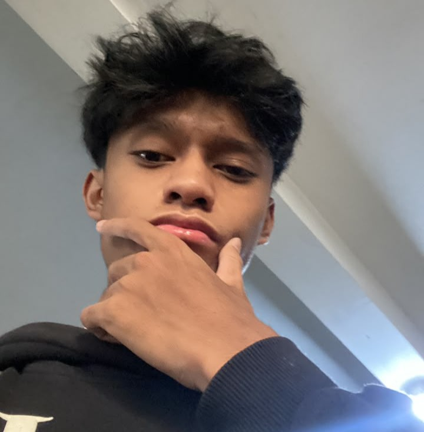

Tentang saya

Saya mahasiswa Program Studi Informatika Universitas Islam Indonesia. Saya tertarik pada pengembangan web dan aplikasi, terutama bagaimana tampilan yang sederhana dapat membuat sebuah sistem lebih mudah digunakan.
| Kegiatan | Peran | Waktu |
|---|---|---|
| Praktikum PABW | Peserta | |
| Algoritma & Struktur Data | Mahasiswa | |
| Pengembangan aplikasi | Peserta |
Karya saya
-
Halaman Kelas Terbuka Kampus
Praktikum P03, HTML semantik dan form.
Praktikum P03 HTML -
SIMPROM
Konsep sistem manajemen produksi mebel untuk latihan pengembangan aplikasi.
Konsep Pengembangan aplikasi -
Halaman profil PABW
Latihan CSS fundamental dan design token.
Praktikum P04 CSS
Pertanyaan tentang saya
Apa yang sedang saya pelajari?
Saya sedang mempelajari pengembangan web, pemrograman, dan cara membuat antarmuka yang mudah digunakan.
Apa tujuan saya belajar web?
Saya ingin memahami proses membuat halaman web dari struktur HTML sampai tampilan CSS yang rapi dan responsif.
Lini masa belajar
- 2026 — Dasar pemrograman: memperkuat konsep algoritma dan pemrograman.
- 2026 — Pengembangan web: belajar HTML, CSS, aksesibilitas, dan design token.
- 2026 — Pengembangan aplikasi: mengembangkan latihan aplikasi dan proyek kuliah.
Hal yang sedang dipelajari
- HTML
- Menyusun struktur halaman yang semantik dan mudah diakses.
- CSS
- Membuat tampilan responsif dengan flexbox, grid, token, dan tema.
- Java
- Mempelajari pemrograman berorientasi objek dan pengembangan aplikasi.